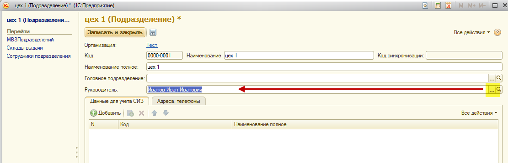

Существует возможность создавать подразделения разных уровней (головные и дочерние подразделения). Чтобы создать подразделение верхнего уровня, необходимо нажать кнопку «Создать» (курсор должен находиться в самом верху таблицы). Откроется окно, в котором необходимо ввести название подразделения и нажать кнопку «Записать и закрыть».
Если необходимо создать подразделение нижнего уровня, нужно выделить курсором старшее подразделение и нажать кнопку «Создать». Откроется окно, в котором уже будет заполнено поле «Головное подразделение» и необходимо будет указать название создаваемого подразделения, а затем нажать кнопку «Записать и закрыть».
Примечание: поле «Головное подразделение» может быть заполнено вручную.
Существует возможность указать руководителя структурного подразделения. В случае заполнения руководителя, он автоматически отображается в личной карточке сотрудников подразделения. Если необходимости отображать это в личной карточке нет, данное поле можно не заполнять.
Для того, чтобы выбрать руководителя подразделения, нажмите на кнопку <...> в поле "Руководитель" и выберите руководителя из справочника "Сотрудники".

После того, как в подразделении выбран руководитель, в личных карточках сотрудников этого подразделения будет отображена информация о ФИО руководителя:
Все созданные подразделения должны быть привязаны к МВЗ. См. "Привязка МВЗ к подразделениям"